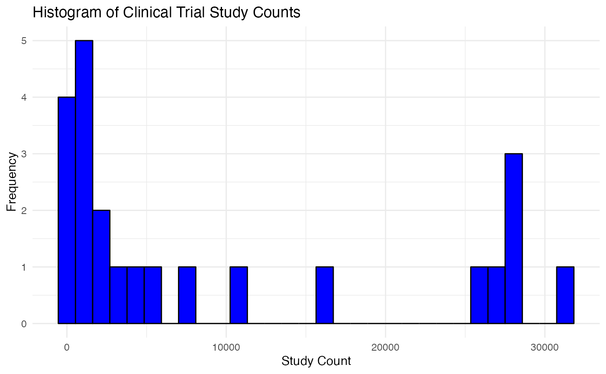
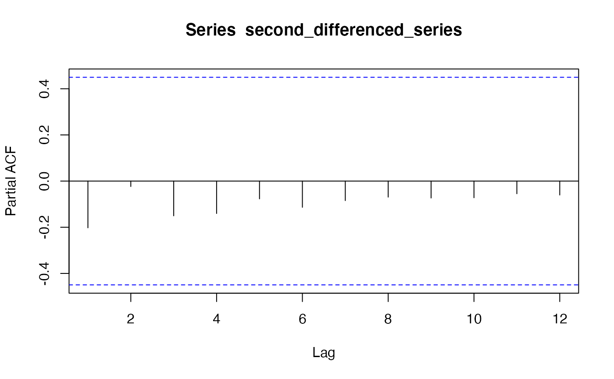

research-ts-analysis.RmdThe ability to predict the number of clinical trials that will be conducted each year is invaluable for pharmaceutical companies, healthcare providers, and regulatory bodies. Accurate forecasts ensure that adequate resources are allocated, regulatory guidelines are appropriately tailored, and the medical community is prepared for shifts in research focus. In this study, we explore the application of Trend-based models and ARIMA (AutoRegressive Intergrated Moving Average) models to detect underlying patterns and predict future study counts in clinical trials. The motivation for this study lies in its potential to streamline clinical trial management and enhance the strategic planning of medical research.
The central inquiry of this project is to determine the trends in the annual count of clinical trials and develop a predictive model that can accurately forecast these numbers. This research seeks to answer two primary questions: First, can we identify significant shifts in clinical trial activity over time using trend-based model? Second, how well can ARIMA models, which are traditionally used for time series forecasting, predict the future count of clinical trials? By addressing these questions, the research aims to contribute to the efficient planning and execution of future clinical studies, which is critical for advancing medical innovation and patient care.
In the following analysis, we will use the yearly_count
table from AACT database that showing the number of actual studies that
are started every year after 1990 (This dataset is generated from
studies dataset).
##
## Attaching package: 'lubridate'## The following objects are masked from 'package:base':
##
## date, intersect, setdiff, union##
## Attaching package: 'dplyr'## The following objects are masked from 'package:stats':
##
## filter, lag## The following objects are masked from 'package:base':
##
## intersect, setdiff, setequal, union## Registered S3 method overwritten by 'quantmod':
## method from
## as.zoo.data.frame zoo
library(tseries)The table countries has 467704 rows and 3 columns. The
nct_id column indicates the nct_id of the study that is
conducted; the start_month_year column shows the month and
year of study, start_date_type are showing what the start
status of the project. There are some missing value (NA) in both the
start_month_year and start_date_type columns.
## nct_id start_date start_date_type
## 0 5134 188311The data cleaning process includes dropping rows that do not have actually started (either estimated or NA) and those rows that without specfiying the start date, selecting the appropriate time ranges(time series of number of studies after 2000 (we believe this is an appropriate number for our forecasting for 2023 and 2024)), and employ function in dplyr to generate the target dataset. Note that although we have data about 2023, we chose to neglect it due to the incompleteness collection of the data for the year. For the sake of forecasting, we separate the last two years as test dataset to evaluate the performance of each model.
df <- complete_studies [complete_studies$start_date_type == 'Actual', ]
# Convert the 'start_date' column to datetime
df$start_date <- as.Date(df$start_date, format="%Y-%m-%d")
# Remove NAs and filter out dates before 2000 or after 2022
df <- df[!is.na(df$start_date) & as.numeric(format(df$start_date, "%Y")) <= 2022 &as.numeric(format(df$start_date, "%Y")) >= 2000, ]
# Extract year from 'start_date'
df$year <- as.numeric(format(df$start_date, "%Y"))
# Now group by 'year' and count the occurrences
yearly_count <- as.data.frame(table(df$year))
# Rename the columns appropriately
colnames(yearly_count) <- c('Year', 'Study_Count')
yearly_count$Year <- as.numeric(as.character(yearly_count$Year))
yearly_count## Year Study_Count
## 1 2000 258
## 2 2001 261
## 3 2002 318
## 4 2003 455
## 5 2004 607
## 6 2005 764
## 7 2006 1002
## 8 2007 1237
## 9 2008 1546
## 10 2009 1961
## 11 2010 2481
## 12 2011 3024
## 13 2012 4095
## 14 2013 5469
## 15 2014 7598
## 16 2015 11239
## 17 2016 16250
## 18 2017 25436
## 19 2018 27200
## 20 2019 28276
## 21 2020 28513
## 22 2021 31539
## 23 2022 27734In this visualization section, I choose to present two plots for the purpose of exploratory data analysis (EDA) : Time Series Line Plot and Study Count Histogram. The Time Series Line Plot shows us the trend of clinical trial study counts over time, whereas allow us to visualize the distribution of study counts across different years. We will then leverage the result of EDA to explain the rationale of employing trend-based models and ARIMA.
ggplot(yearly_count, aes(x=Year, y=Study_Count)) +
geom_line() +
scale_y_continuous(limits=c(0, 30000), breaks=seq(0, 30000, by=5000)) +
theme_minimal() +
theme(axis.text.x = element_text(angle = 45, hjust = 1)) +
labs(title="Time Series of Clinical Trial Study Counts",
x="Year",
y="Study Count")From the graph, it appears that there is a noticeable upward trend, particularly in recent years, indicating an increase in the number of studies conducted. This increasing trend can affect the forecasting plan by suggesting that trend-based model and ARIMA could capture the essential component of this time series. Specifically, we will consider a log-trend model because of the shape of this time series curve.
ggplot(yearly_count, aes(x=Study_Count)) +
geom_histogram(bins=30, fill="blue", color="black") +
theme_minimal() +
labs(title="Histogram of Clinical Trial Study Counts",
x="Study Count",
y="Frequency")
The distribution of study count actually informed us the possibility of break in trend and the occurrence of some outliers. ARIMA and trend-based model is somewhat sensitive to outliers. We would take them into consideration while we proceed with caveat in this study.
In this section, we will present our methodology of employment trend-based models and ARIMA models thoroughly.
split_row <- nrow(yearly_count) - 2
training_set <- yearly_count[1:split_row, ]
test_set <- yearly_count[(split_row + 1):nrow(yearly_count), ]
training_set## Year Study_Count
## 1 2000 258
## 2 2001 261
## 3 2002 318
## 4 2003 455
## 5 2004 607
## 6 2005 764
## 7 2006 1002
## 8 2007 1237
## 9 2008 1546
## 10 2009 1961
## 11 2010 2481
## 12 2011 3024
## 13 2012 4095
## 14 2013 5469
## 15 2014 7598
## 16 2015 11239
## 17 2016 16250
## 18 2017 25436
## 19 2018 27200
## 20 2019 28276
## 21 2020 28513
test_set## Year Study_Count
## 22 2021 31539
## 23 2022 27734We chose to report MAPE and MSE for each models since we care the absolute magnitude we miss and we might want to penalize more when the forecast value is way off.
Trend-based models are designed to capture and forecast systematic long-term movements in time series data. The model incorporates this trend to predict future values by extrapolating the established direction of the data. In this study, we specifically focus on log-trend model due to the shape of time series curve we observed.
library(dplyr)
trend_train <- data.frame(training_set)
trend_train$log_study_count <- log(trend_train$Study_Count)
# Creating a time variable
trend_train$Time <- seq_along(trend_train$log_study_count)
# Fitting a linear model to the log-transformed study counts against time
log_trend_model <- lm(log_study_count ~ Time, data = trend_train)
summary(log_trend_model)##
## Call:
## lm(formula = log_study_count ~ Time, data = trend_train)
##
## Residuals:
## Min 1Q Median 3Q Max
## -0.28570 -0.08994 -0.02840 0.04314 0.38356
##
## Coefficients:
## Estimate Std. Error t value Pr(>|t|)
## (Intercept) 5.05964 0.07095 71.32 <2e-16 ***
## Time 0.26115 0.00565 46.22 <2e-16 ***
## ---
## Signif. codes: 0 '***' 0.001 '**' 0.01 '*' 0.05 '.' 0.1 ' ' 1
##
## Residual standard error: 0.1568 on 19 degrees of freedom
## Multiple R-squared: 0.9912, Adjusted R-squared: 0.9907
## F-statistic: 2136 on 1 and 19 DF, p-value: < 2.2e-16We observe that both coefficient are statistically significance, and we could choose to fit a quadratic model to see whether or not the second order terms help.
# Add a second-order term for Year
trend_train$Time2 <- trend_train$Time^2
# Fit a second-order polynomial model (quadratic model)
log_trend_model_2 <- lm(log_study_count ~ Time + Time2, data = trend_train)
# Summary of the model to check the coefficients and other statistics
summary(log_trend_model_2)##
## Call:
## lm(formula = log_study_count ~ Time + Time2, data = trend_train)
##
## Residuals:
## Min 1Q Median 3Q Max
## -0.35805 -0.07730 -0.01766 0.04567 0.36947
##
## Coefficients:
## Estimate Std. Error t value Pr(>|t|)
## (Intercept) 5.155975 0.112652 45.769 < 2e-16 ***
## Time 0.236019 0.023586 10.007 8.84e-09 ***
## Time2 0.001142 0.001041 1.097 0.287
## ---
## Signif. codes: 0 '***' 0.001 '**' 0.01 '*' 0.05 '.' 0.1 ' ' 1
##
## Residual standard error: 0.156 on 18 degrees of freedom
## Multiple R-squared: 0.9917, Adjusted R-squared: 0.9908
## F-statistic: 1080 on 2 and 18 DF, p-value: < 2.2e-16We observe that the coefficients of the second order term are not statistically significant, and we stick with the previous model to make test forecast.
# Forecasting the next two periods
# Create a new data frame for the future time periods
future_times <- data.frame(Time = max(trend_train$Time) + c(1, 2))
# Predict on the future times using the model
log_forecasts <- predict(log_trend_model, newdata = future_times, interval = "confidence")
# Back-transform forecasts to the original scale
forecasts <- exp(log_forecasts[, "fit"])
trend_forecasts_df <- data.frame(Year = c(2021, 2022), Forecast = forecasts)
# Calculate the errors
errors <- test_set$Study_Count - forecasts
# Mean Absolute Error (MAE)
mae <- mean(abs(errors))
# Mean Squared Error (MSE)
mse <- mean(errors^2)
cat("Mean Squared Error (MSE):", mse, "\n")## Mean Squared Error (MSE): 813495202
cat("Mean Absolute Error (MAE):", mae, "\n")## Mean Absolute Error (MAE): 26979.07
p <- ggplot() +
geom_line(data = trend_train, aes(x = Year, y = Study_Count, color = "Historical Data")) +
geom_point(data = test_set, aes(x = Year, y = Study_Count, color = "Actual Values"), size = 3) +
geom_point(data = trend_forecasts_df, aes(x = Year, y = Forecast, color = "Forecasted Values"), size = 3) +
# Define the colors and the legend
scale_color_manual(values = c("Historical Data" = "blue", "Actual Values" = "green", "Forecasted Values" = "red")) +
# Add titles and labels
labs(title = "Log Trend Model for Clinical Trial Study Count Analysis",
x = "Year",
y = "Study Count") +
theme_minimal() +
theme(legend.position = "bottom")
pBased on the plot and metrics, it seems like the trend-based model did poorly in actually capture the patterns. Hence, we consider a break in trend model.
A break in a trend model, often referred to as a structural break or change point, is an unexpected shift in a time series that can lead to significant changes in the level or trend of the series.
library(strucchange)## Loading required package: zoo##
## Attaching package: 'zoo'## The following objects are masked from 'package:base':
##
## as.Date, as.Date.numeric## Loading required package: sandwich
basic_trend_model <- lm(Study_Count ~ Time, data = trend_train)
breakpoints_model <- breakpoints(Study_Count ~ Time, data = trend_train)
plot(breakpoints_model)
breaks <- breakpoints(breakpoints_model)Based on the RSS plot, we chose to set break point accordingly and separate out the last_segment.
last_segement <- trend_train[trend_train$Time > breaks$breakpoints[2], ]
break_in_trend_model <- lm(Study_Count ~ Time, data = last_segement)
summary(break_in_trend_model)##
## Call:
## lm(formula = Study_Count ~ Time, data = last_segement)
##
## Residuals:
## 15 16 17 18 19 20 21
## -1499.89 -1707.79 -545.68 4791.43 2706.54 -66.36 -3678.25
##
## Coefficients:
## Estimate Std. Error t value Pr(>|t|)
## (Intercept) -48635.5 10745.2 -4.526 0.00625 **
## Time 3848.9 593.3 6.487 0.00130 **
## ---
## Signif. codes: 0 '***' 0.001 '**' 0.01 '*' 0.05 '.' 0.1 ' ' 1
##
## Residual standard error: 3139 on 5 degrees of freedom
## Multiple R-squared: 0.8938, Adjusted R-squared: 0.8726
## F-statistic: 42.08 on 1 and 5 DF, p-value: 0.001298
# Forecasting the next two periods
# Create a new data frame for the future time periods
future_times <- data.frame(Time = max(trend_train$Time) + c(1, 2))
# Predict on the future times using the model
break_in_trend_forecasts <- predict(break_in_trend_model, newdata = future_times)
trend_forecasts_df <- data.frame(Year = c(2021, 2022), Forecast = break_in_trend_forecasts)
# Calculate the errors
errors <- test_set$Study_Count -break_in_trend_forecasts
# Mean Absolute Error (MAE)
mae <- mean(abs(errors))
# Mean Squared Error (MSE)
mse <- mean(errors^2)
cat("Mean Squared Error (MSE):", mse, "\n")## Mean Squared Error (MSE): 84002590
cat("Mean Absolute Error (MAE):", mae, "\n")## Mean Absolute Error (MAE): 8328.089
p <- ggplot() +
geom_line(data = trend_train, aes(x = Year, y = Study_Count, color = "Historical Data")) +
geom_point(data = test_set, aes(x = Year, y = Study_Count, color = "Actual Values"), size = 3) +
geom_point(data = trend_forecasts_df, aes(x = Year, y = break_in_trend_forecasts, color = "Forecasted Values"), size = 3) +
# Define the colors and the legend
scale_color_manual(values = c("Historical Data" = "blue", "Actual Values" = "green", "Forecasted Values" = "red")) +
# Add titles and labels
labs(title = "Break in Trend Model for Clinical Trial Study Count Analysis",
x = "Year",
y = "Study Count") +
theme_minimal() +
theme(legend.position = "bottom")
pIt seems that the break in trend model did much better than the log-trend model, and we would further explore using more complex time series model for this study.
ARIMA stands for AutoRegressive Integrated Moving Average. It is a class of models that explains a given time series based on its own past values, meaning its lags and the lagged forecast errors, so that equation can be used to forecast future values. An ARIMA model has three components: AR (autoregression), I (integration), which involves differencing the data to make it stationary, and MA (moving average). This model is versatile and widely used for time series forecasting when the data are stationary or can be made stationary through differencing. It can handle complex and subtle stochastic structures in the data.
To indentify the order we conduct ADF test, and look at the PACF and ACF plot.
library(tseries)
adf_result <- adf.test(training_set$Study_Count, alternative = "stationary")
adf_result##
## Augmented Dickey-Fuller Test
##
## data: training_set$Study_Count
## Dickey-Fuller = -1.6952, Lag order = 2, p-value = 0.6885
## alternative hypothesis: stationary
differenced_series <- diff(training_set$Study_Count)
adf_result <- adf.test(differenced_series, alternative = "stationary")
adf_result##
## Augmented Dickey-Fuller Test
##
## data: differenced_series
## Dickey-Fuller = -2.8296, Lag order = 2, p-value = 0.2563
## alternative hypothesis: stationary
second_differenced_series <- diff(diff(training_set$Study_Count))
adf_result <- adf.test(second_differenced_series, alternative = "stationary")
adf_result##
## Augmented Dickey-Fuller Test
##
## data: second_differenced_series
## Dickey-Fuller = -3.3582, Lag order = 2, p-value = 0.08358
## alternative hypothesis: stationaryWe found that the second difference of time series is stationary and the order of I is 2.
pacf(second_differenced_series)
acf(second_differenced_series)Based on the PACF and ACF plot, we chose to employ ARIMA(0, 2, 1).
##
## Call:
## arima(x = training_set$Study_Count, order = c(0, 2, 1))
##
## Coefficients:
## ma1
## -0.2261
## s.e. 0.2600
##
## sigma^2 estimated as 3960520: log likelihood = -171.31, aic = 346.62
tsdiag(arima_model)Based on the p values for Ljung-Box Statistic, our model is adequately fitted.
forecast_values <- forecast(arima_model, h=2)
arima_forecasts_df <- data.frame(Year = c(2021, 2022), Forecast = forecast_values$mean)
# Calculate the errors
errors <- test_set$Study_Count - forecast_values$mean
# Mean Absolute Error (MAE)
mae <- mean(abs(errors))
# Mean Squared Error (MSE)
mse <- mean(errors^2)
cat("Mean Squared Error (MSE):", mse, "\n")## Mean Squared Error (MSE): 4812681
cat("Mean Absolute Error (MAE):", mae, "\n")## Mean Absolute Error (MAE): 2170.306
p <- ggplot() +
geom_line(data = training_set, aes(x = Year, y = Study_Count, color = "Historical Data")) +
geom_point(data = test_set, aes(x = Year, y = Study_Count, color = "Actual Values"), size = 3) +
geom_point(data = arima_forecasts_df, aes(x = Year, y = forecast_values$mean, color = "Forecasted Values"), size = 3) +
# Define the colors and the legend
scale_color_manual(values = c("Historical Data" = "blue", "Actual Values" = "green", "Forecasted Values" = "red")) +
# Add titles and labels
labs(title = "ARIMA Model for Clinical Trial Study Count Analysis",
x = "Year",
y = "Study Count") +
theme_minimal() +
theme(legend.position = "bottom")
pBased on the graph and evaluation metrics, ARIMA model peform comparatively well than the trend-based model. In our understanding, this could be the result from that ARIMA models explicitly account for non-stationarity in the data through differencing (the ‘I’ part of ARIMA), whereas basic trend models may not adequately handle non-stationary data that often result in spurious regressions. In addition to that, ARIMA models can capture correlations in the time series data at different lags through the AR and MA components. This flexibility allows ARIMA to model a wide range of time series behaviors that a simple trend model might miss, such as short-term fluctuations and seasonal variations.
Hence, we utilize it to make forecast for the 2023 and 2024 after combining training and test data.
##
## Call:
## arima(x = yearly_count$Study_Count, order = c(0, 2, 1))
##
## Coefficients:
## ma1
## -0.4114
## s.e. 0.2324
##
## sigma^2 estimated as 5555387: log likelihood = -192.96, aic = 389.92
forecast_values <- forecast(arima_model, h=2)
arima_forecasts_df <- data.frame(Year = c(2023, 2024), Forecast = forecast_values$mean)
p <- ggplot() +
geom_line(data = yearly_count, aes(x = Year, y = Study_Count, color = "Historical Data")) +
geom_point(data = arima_forecasts_df, aes(x = Year, y = forecast_values$mean, color = "Forecasted Values"), size = 3) +
# Add the forecast interval using geom_ribbon
geom_ribbon(data = arima_forecasts_df, aes(x = Year, ymin = forecast_values$lower[, 2], ymax = forecast_values$upper[, 2], fill = "95% CI"), alpha = 0.2) +
scale_color_manual(values = c("Historical Data" = "blue", "Forecasted Values" = "red")) +
scale_fill_manual(values = c("95% CI" = "orange")) +
labs(title = "ARIMA Model for Clinical Trial Study Count Analysis",
x = "Year",
y = "Study Count") +
theme_minimal() +
theme(legend.position = "bottom")
# Display the plot
print(p)Based on our study, the ARIMA model provided a better fit for the time series data of clinical trial study counts compared to the trend-based model. This was evidenced by improved forecast accuracy metrics, i.e. lower Mean Squared Error (MSE) and Mean Absolute Error (MAE). After we identify the best model, we present the point forecast and interval forecast for number of study will be started in 2023 and 2024. Despite that ARIMA model performs better than trend-based models, this is still our first step towards tackling this forecasting problem, and we acknowledge some limitations of using this approach. For example, ARIMA model is sensitive to outliers and this could be observe a little bit by how the forecasting trend shifting after a spike in 2021. Therefore, further refinement and improvement of the model need to be further explored to better understanding this time series and make accurate forecast.